quarter-b64-fov27-ev1.png
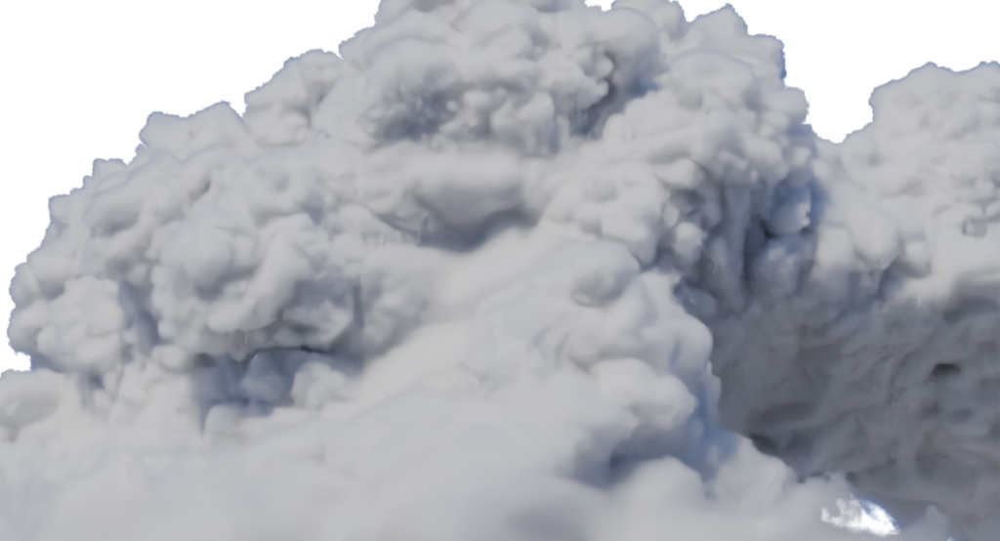
새 렌더 · 207.2초 · 최대96 samples/OIDN
1:1 실제 픽셀 crop
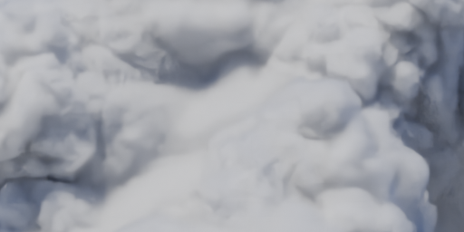
국소 에셋 시험 / TUNE. 고해상도 원본을 확보했지만 북유럽 실제씬이나 스크롤에 적용한 결과는 아닙니다. 공식 예제의 camera/light/density4/HG.877/albedo1을 Cycles로 번안했습니다. 원형 Mitsuba 또는 Hyperion과 동일한 렌더가 아닙니다.
같은 부분을 FOV27°로 확대한 두 원본입니다. 두 장 모두 display exposure +1EV를 적용했습니다. +1EV는 밝기 표시 변경이며 디테일을 추가한 것이 아닙니다. 1/4과1/2의 차이는 같은 구도·노출 안에서 보세요.

새 렌더 · 207.2초 · 최대96 samples/OIDN
1:1 실제 픽셀 crop

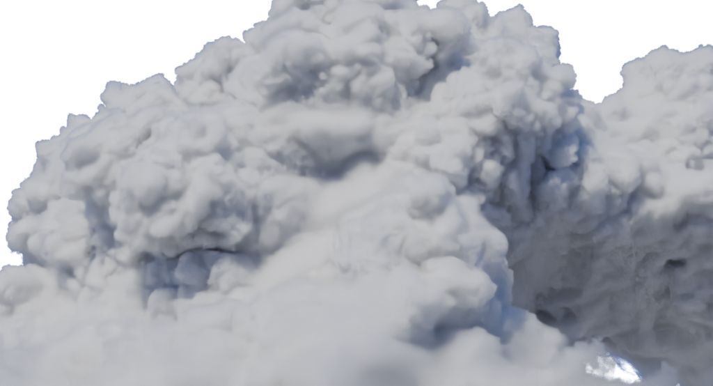
새 렌더 · 319.5초 · 최대96 samples/OIDN
1:1 실제 픽셀 crop
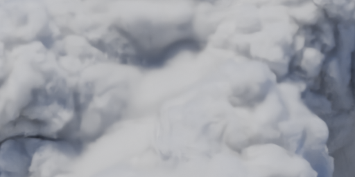
가로FOV54.43°, exposure0. 구름 전체를 담으면 작은 source 차이가 화면 표본화에 가려질 수 있습니다.
새 렌더 · 100.7초 · 최대96 samples/OIDN
1:1 실제 픽셀 crop
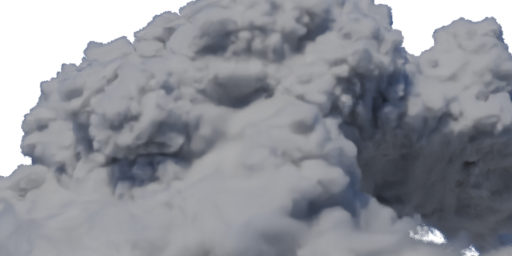
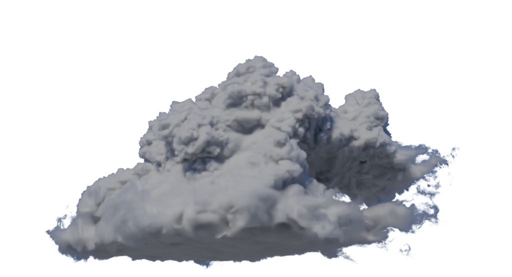
새 렌더 · 143.6초 · 최대96 samples/OIDN
1:1 실제 픽셀 crop
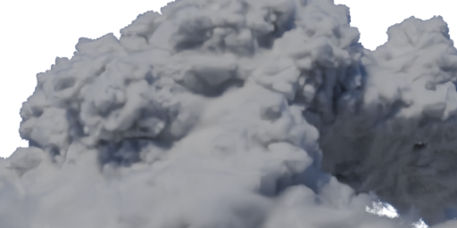
6/64 bounces만 변경. 최대 깊이 상한이지 모든 광선이64회 산란했다는 뜻은 아닙니다. OIDN·adaptive sampling 노이즈 차이도 남습니다.
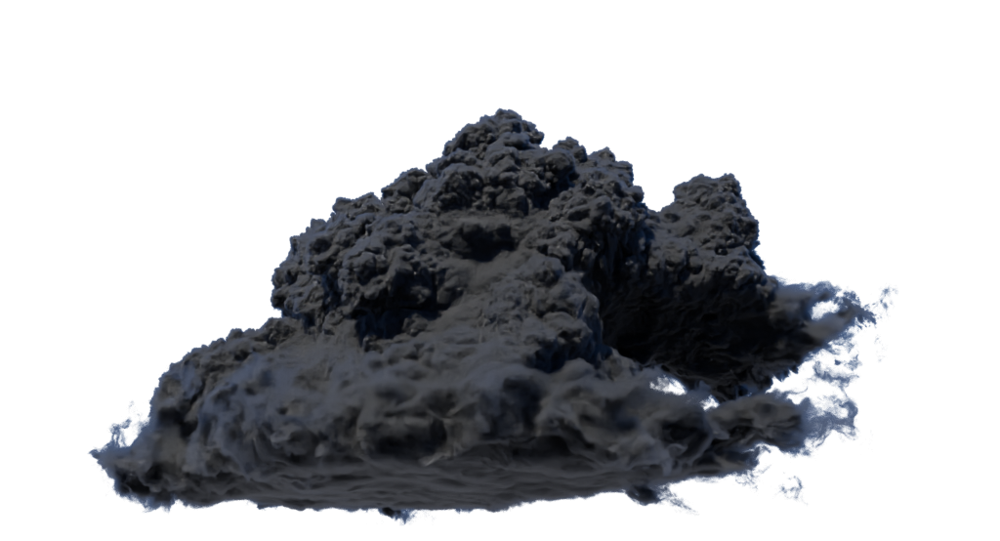
새 렌더 · 30.9초 · 최대96 samples/OIDN
1:1 실제 픽셀 crop
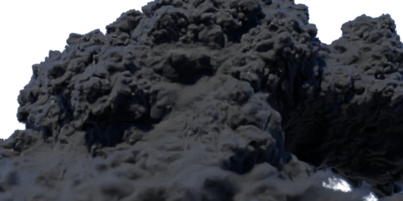
새 렌더 · 143.6초 · 최대96 samples/OIDN
1:1 실제 픽셀 crop
아래 이미지는 Disney가 제공한 Hyperion beauty이며 이번에 직접 렌더한 화면이 아닙니다. 원형사진 Kevin Udy / 원형 데이터 Copyright2017 Disney Enterprises Inc / CC BY-SA3.0. 원형 이미지와 VDB는 로컬 source에만 보관해, 소스 확보 없이 Git에서 이 비교페이지를 열면 아래 이미지는 표시되지 않을 수 있습니다.

공식 데이터 · 획득 hash·출처 · 실제 렌더 조건 · 원본 voxel metadata · 남은 차이
512×277/최대32samples. 잘못된90° import 회전 결과는 품질 판정에서 제외하고 기록만 남깁니다.
축 수정 후 미리보기
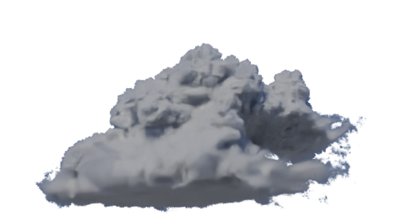
기각: 자동90°회전
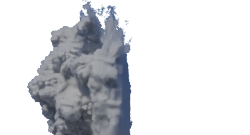